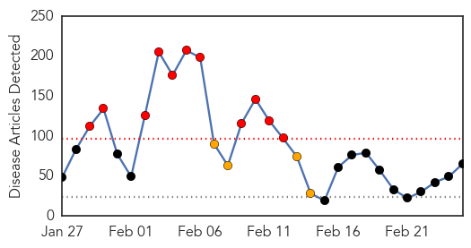
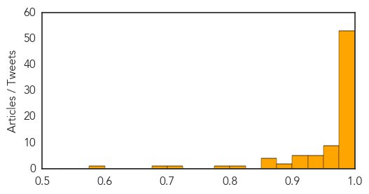

Measles
30-Day Web Trend
11 alerts, 4 warnings

30-Day Twitter Trend
6 alerts, 0 warnings

Article Locations

Article Confidences

Top Articles:
- 0.995
- Measles Cases Continue to Rise across the US
- 0.983
- Officials declare end of measles outbreak in Utah but have warning for residents
- 0.980
- Measles vaccinations urged in Europe amid outbreaks
- 0.978
- WHO urges more vaccinations against measles in Europe amid outbreak
- 0.977
- WHO calls for vaccinations against European measles epidemic
- 0.975
- The Chaffee County Times: Free Content
- 0.974
- WHO calls for vaccinations against European measles epidemic
- 0.974
- WHO calls for vaccinations against European measles epidemic
- 0.972
- Toddler dies of measles in Berlin, first death in outbreak
- 0.971
- Utah Department of Health declares end to measles outbreak
- 0.970
- Sudbury health officials on the alert for measles
- 0.969
- As flu season winds down, health officials continue to encourage getting vaccinated
- 0.968
- Officials: Measles outbreak in state is over, cost $115,000 to manage
- 0.968
- Measles is no longer spreading in Utah
- 0.967
- Outbreak causes vaccination debate to heat up
- 0.964
- Health officials urge vaccinations as measles cases on the rise
- 0.962
- Recent measles case prompts vaccination debate
- 0.954
- UN health agency ‘taken aback’ as measles resurfaces in Europe, calls for widespread vaccination
- 0.954
- 18-month-old baby dies in German measles outbreak
- 0.954
- Measles Resurfaces in Europe
- 0.953
- REFILE-WHO calls for more measles vaccination in Europe as large outbreaks persist
- 0.952
- WHO Urges Increased Vaccinations After 22,000 Cases And Multiple Deaths
- 0.950
- WHO Urges Europe to Vaccinate Against Recent Measles Outbreak
- 0.942
- As flu season winds down, health officials continue to encourage
- 0.936
- IN-DEPTH RADIO :: Toddler diagnosed with measles in Elliot Lake, Ont. :: News
- 0.936
- WHO calls for more efforts to fight measles - Xinhua
- 0.932
- lehighacrescitizen.com, news, sports, Florida info, Lehigh Acres Citizen
- 0.931
- Toddler in northern Ontario with no history of travel contracts measles
- 0.926
- OP-ED: A nurse weighs in on vaccinations
- 0.921
- Toddler Dies as Measles Outbreak Hits German Capital
- 0.909
- Illegal Immigration Did Not Cause Measles Outbreak
- 0.904
- A new threat on the U.S.-Mexico border: Americans with measles
- 0.899
- Stop Blaming Illegal Immigrants For the Measles Outbreak
- 0.884
- WHO/Europe calls for scaled-up vaccination against measles
- 0.877
- Europe: Measles outbreaks prompt WHO to call for push for vaccinations
- 0.872
- Appendix. The situation in the seven affected countries
- 0.866
- Measles 'patient zero' and why outbreak might not be over
- 0.853
- WHO ′taken aback′ by high number of measles cases
- 0.846
- Europe urged to step up vaccinations against measles
- 0.841
- Dana Hills High School
- 0.840
- WHO to provide vaccinations against measles
- 0.840
- safe or not?. Health. Tengrinews.kz
- 0.836
- Is the Lower Shore ready for measles?
- 0.832
- WHO Fights for Vaccine Campaigns After Thousands Are Infected in Europe
- 0.814
- Measles hits close to home
- 0.814
- Vaccination against measles in Kazakhstan puts teenagers into hospital beds. Health. Tengrinews.kz
- 0.812
- WHO Launches Billion-Dollar Health Appeal for Four Countries
- 0.812
- WHO Launches Billion-Dollar Health Appeal for Four Countries
- 0.808
- Elliot Lake patient’s measles diagnosis could be example of new Ontario virus – Manitoulin Expositor
- 0.804
- WHO 'taken aback' by measles outbreaks
Showing top 50 articles...
Top Tweets:
-
No tweets found for Feb 25, 2015
Swine Flu
30-Day Web Trend
12 alerts, 12 warnings

30-Day Twitter Trend
1 alerts, 0 warnings

Article Locations

Article Confidences
Top Articles:
- 1.000
- Panic spreads as swine flu deaths rise in India ucanews.com
- 1.000
- Read Health News & Articles at TheHealthSite.com
- 1.000
- Isolation debate on swine flu
- 1.000
- 10 die, 166 test ve in state in 24 hours
- 1.000
- Ahmedabad bans public gatherings as deadly swine flu sweeps across Gujarat
- 1.000
- India swine flu: Outbreak has already claimed nearly 850
- 0.999
- Swine flu Death toll Reaches 219 and 3,337 Cases
- 0.999
- Metropolis healthcare offers Swine Flu test at Rs. 4000
- 0.999
- Siliguri docs in flu isolation
- 0.999
- Running a fever
- 0.999
- Indian city bans gatherings over swine flu outbreak
- 0.999
- At high risk, CISF personnel wear anti-swine flu masks
- 0.999
- Swine flu claims 51 more lives, death toll 926; No panic: Govt
- 0.999
- High Court directs UP to purchase three lakh masks
- 0.999
- H1N1 2015 city’s worst outbreak
- 0.998
- Flu fight stuck in isolation debate
- 0.998
- Indian city imposes swine flu restrictions - Panorama
- 0.998
- High Court directs UP to purchase three lakh masks
- 0.998
- Swine flu claims 51 more lives, death toll at 926; govt says 'don't panic'
- 0.998
- St George’s isolation ward remains idle as patients wait at pvt hospitals
- 0.997
- Swine flu kills 51 more, toll reaches 926; No panic
- 0.997
- Dos and Donts to avoid swine flu
- 0.997
- Swine flu claims 51 more lives, over 16,000 affected
- 0.996
- Two swine flu patients found in North Bengal
- 0.995
- Indian city bans public gatherings over swine flu fears
- 0.995
- J P Nadda does not recommend vaccination for general public
- 0.995
- Delhi HC seeks response from Centre and state govt to tackle swine flu surge : India, News
- 0.994
- Six tested positive for swine flu in Bihar
- 0.993
- Health desks set up at border points
- 0.993
- Swine flu: India health minister urges calm
- 0.993
- Swine flu: India health minister urges calm
- 0.992
- Urgent need for India to find out if swine flu virus has mutated
- 0.992
- Three fresh swine flu deaths in Telangana
- 0.992
- Swine flu kills 51 more people, affects over 16,000 across country : India, News
- 0.991
- Section 144 imposed in Ahmedabad to prevent swine flu , AniNews.in
- 0.990
- Swine flu in Telangana: Are you being treated for the wrong virus?
- 0.989
- Open separate centre for A(H1N1) influenza in Davangere, State government urged
- 0.988
- Suspected Swine Flu patients, a harassed lot: alleges Aam Aadmi Party Ludhiana
- 0.986
- Costa Rican health officials confirm eight deaths from AH1N1 virus -The Tico Times
- 0.984
- Open separate centre for A(H1N1) influenza in Davangere, State government urged
- 0.983
- ‘Mandatory week off to children with flu’; 53 New Cases Take Total To 326
- 0.982
- Imposing law to tackle swine flu will only create panic: Tariq Anwar
- 0.982
- Court notice to government on swine flu; Nadda says don't panic
- 0.982
- Be alert to swine flu virus, but no need to panic, says Health Minister
- 0.981
- What steps taken to deal with swine flu, Delhi HC asks Centre
- 0.981
- Court notice to government on swine flu; Nadda says don't panic
- 0.981
- Man dies of H1N1, 2 days after being told he’s virus-free
- 0.980
- Swine Flu H1N1: Red alert in Arunachal Pradesh to tackle the outbreak of swine flu
- 0.977
- Swine flu: Expert urges Indian researchers to find out if virus has mutated
- 0.977
- 413 swine flu cases in UP, toll mounts to 11
Showing top 50 articles...
Top Tweets:
-
No tweets found for Feb 25, 2015